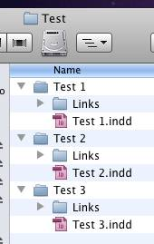
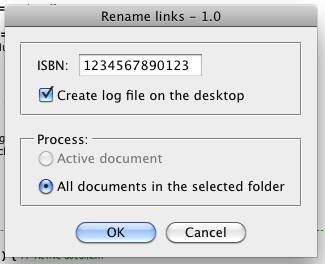
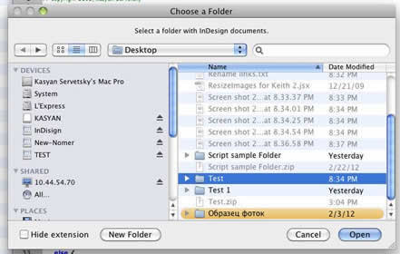
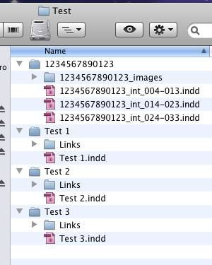
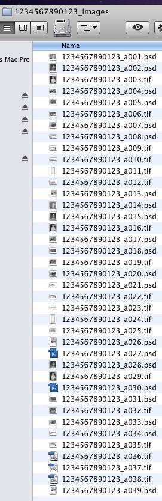
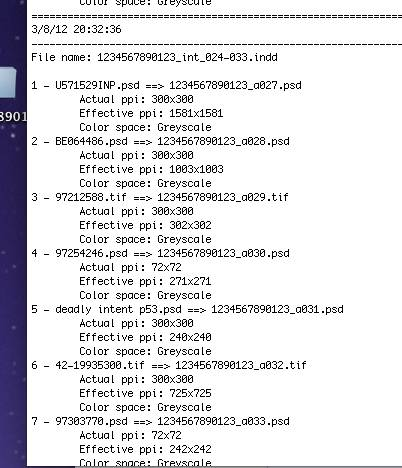

Rename Links Using ISBN-number
How it works:
The script works in two modes: Active document and All documents in the selected folder.
If no document is open, only the latter is available. If indd-file’s name doesn’t begin with an ISBN-number (13 digits), the script saves it using a new name ( ISBN-number + "_int" + first page number + last page number + original extension.) leaving the original intact.
However, if the active document’s name already begins with an ISBN-number, the script works with the original (since no need to rename it). In this case, the dialog box displays the ISBN-number taken from the document’s name.
The script doesn't overwrite existing images; it saves them as copies using the following name convention: ISBN-number + "_a" + consecutive number + original extension.
Let’s illustrate it with screenshots:
Folder “Test” with InDesign packages before running the script

I start the script and enter the ISBN-number

Select the folder

In the selected folder, a new folder is created whose name is the ISBN-number (let’s call it the “main” folder). All documents are copied there with new names generated automatically. (Note: the script gets the first and last pages from docs to use in their names)

Inside the “main” folder, the “images” folder is created into which all links are copied like so:

On the desktop, a log-file is created in which you can see how the images were renamed and their actual and effective resolution and their color space..

Download the script from here.